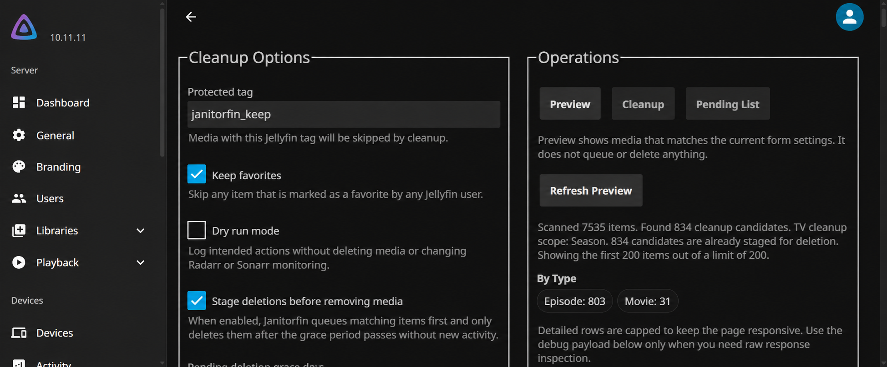

The problem: cleanup is a workflow
Removing an old file is straightforward. Deciding that it should be removed, giving users a chance to keep it, and preventing another application from downloading it again is a systems problem.
Janitorfin is a Jellyfin-native plugin I developed around that workflow. It evaluates watched and never-watched media against retention rules, stages matching items for review, and can coordinate monitoring changes in Radarr and Sonarr before removal. The goal is to make library cleanup visible and controllable inside the application people already use.
The central design constraint is that a candidate is not a deletion instruction. A favorite, a protected tag, a change in eligibility, or a failed integration action can change what should happen next.
What I built
- Role
- Plugin development, admin interface, integration logic, and packaging
- Stack
- C# / .NET 9, Jellyfin APIs, HTML and JavaScript
- Environment
- Jellyfin, with optional Radarr, Sonarr, Jellystat, and Discord integrations
- Delivery
- Packaged plugin ZIP and a Jellyfin repository manifest
The plugin brings together a rules evaluator, a persistent pending queue, two scheduled tasks, an embedded configuration page, and review surfaces in Jellyfin. Optional integrations extend that workflow without making every service a prerequisite for using the plugin.
The admin page separates settings from operations. Rules and integrations sit on the left; Preview, Cleanup, and Pending List tabs sit on the right. Preview evaluates the current form without committing a cleanup action. Pending List describes already staged work, which is a different kind of state.

From a rule to a reviewed action
- 01 / InspectPreview rules
Evaluate candidates without changing state.
- 02 / StageScan and queue
Save eligible items and their grace deadlines.
- 03 / ReviewRemoving Soon
Expose pending media in Jellyfin.
- 04 / ApplyDelete overdue items
Check protections, coordinate monitoring, then remove.
The scan task evaluates the library and reconciles the pending queue. Newly eligible items receive a saved deadline. Items that no longer qualify leave the queue. Pending media is mirrored into a Removing Soon collection, with an optional home-screen row through Home Screen Sections.
The overdue task reads the saved queue instead of repeating the full library scan. It checks that an item still exists, checks protected tags and favorites when enabled, and performs the configured monitoring action before deletion. This keeps the expensive evaluation separate from executing work whose review period has ended.
There is a deliberate boundary here: the overdue task does not re-evaluate the full watch-history and retention rules. A later scan reconciles those conditions. The scan schedule therefore matters when activity changes during the review window.
The decisions that shape the behavior
Save deadlines with the item
The queue persists each item's first-qualified time, last-matched time, and deletion deadline in a JSON file. Rescanning an existing candidate does not continually reset its deadline. Changing grace days affects new entries rather than silently rescheduling the existing queue.
Keep TV eligibility and monitoring scope separate
TV rules evaluate episodes first. A season or series becomes a candidate group only when every evaluated episode in that scope qualifies. Sonarr unmonitor scope is a separate setting: deciding what may be removed and deciding what may be downloaded later are related, but different, policies.
Keep review in the existing product
The Jellyfin collection lets people browse pending media without opening the plugin configuration. Home Screen Sections can make the same work visible on the home screen. If that optional plugin is absent, the collection remains the review surface.
Distinguish preview from dry run
Preview evaluates the settings currently displayed in the admin form. Dry run applies to task execution and reports intended outcomes without altering the queue, deleting media, or changing remote monitoring. Both help inspect behavior, but they answer different operational questions.
What happens when part of the workflow fails
When configured unmonitoring fails, Janitorfin skips the corresponding deletion and records the failed result. Sonarr actions are grouped within a run so episodes sharing an action do not repeatedly trigger the same successful update or retry the same failed one.
This is not a distributed transaction. If unmonitoring succeeds and Jellyfin's file deletion then fails, the monitoring change has already happened. Execution results retain whether Radarr or Sonarr was updated as well as whether deletion succeeded, so a partial outcome can be distinguished from a completed one.
The tasks also wait for Jellyfin library maintenance operations before proceeding. That reduces overlap with scans and metadata work, but is not a guarantee against every concurrent change in the system. Review, current protection checks, and observable results each address a different part of the problem.
Delivery and the resulting capability
The public project targets .NET 9 and references Jellyfin 10.11.6 packages. Its CI workflow restores, builds, publishes, and packages the plugin ZIP. The release workflow publishes the package and updates the repository manifest used for Jellyfin installation and update discovery.
The delivered result is a working cleanup workflow inside Jellyfin: configurable rules, a preview, durable staged work, user-facing review, and coordinated deletion. In my own Jellyfin environment, the installed plugin exposes its controls through the admin page and its pending media through the Removing Soon review surfaces.
The project demonstrates integration design and operational judgment: deciding where state lives, which conditions must be checked again, how multiple services can disagree, and what an operator needs to see after a partial failure.
What I would strengthen next
The scan/delete boundary is a useful place for further testing. A strong scenario matrix includes recent activity after staging, a newly added favorite, a missing item, a changed grace setting, and a monitoring update that fails before deletion.
Queue persistence also deserves focused failure testing: interrupted writes, invalid saved data, and restart behavior. The current JSON queue is a straightforward persistence choice; it is not a claim of transactional storage or automatic recovery from every damaged state.
Clearer candidate explanations and broader automated coverage of season/series grouping would make future changes easier to assess. Those are next steps, rather than claims about validation already completed. The broader lesson is that good automation needs an explainable lifecycle around the action it performs.
Explore the implementation
This case study follows the public source at commit fb72f2a. Current releases and behavior may evolve.